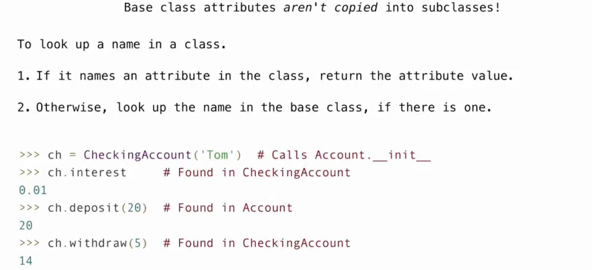

Object-Oriented Programming¶
约 1743 个字 125 行代码 6 张图片 预计阅读时间 7 分钟
Object¶
对象
-
在Python中，对象是数据结构的一个实例，它包含数据（称为属性）和可以操作这些数据的代码（称为方法）。Python是一种面向对象的编程语言，这意味着它支持使用对象来模拟现实世界中的事物和概念。
Objects represent information
They consists of data and behavior, bundled together to create abstractions
Objects can represent things, but also properties, interactions, & processes -
在Python中，每个值都是一个对象
- 所有对象都有属性
- 通过对象方法可以实现各种操作
- 函数只能做一件事，对象则是做相关的各种事情
- A
classdefines how objects of a particular type behave - A
objectis an instance of a class; the class is its type - A
methodis a function called on an object using a dot
Mutability¶
-
在Python中，可变性（Mutability）是指对象所持有的数据是否可以被修改。根据对象的类型，对象可以被分类为可变（mutable）或不可变（immutable）。
-
不可变对象（Immutable）：这类对象一旦创建，它们的内容就不能改变。Python中的一些不可变类型包括整数（int）、浮点数（float）、字符串（str）和元组（tuple）。这意味着如果你尝试改变这些类型的对象的值，Python实际上会创建一个新的对象来代替旧的对象。
-
可变对象（Mutable）：这类对象创建后，它们的内容可以被修改。Python中的一些可变类型包括列表（list）、字典（dict）和集合（set）。这意味着你可以在不创建新对象的情况下修改这些对象的内容
- 所有指向相同对象的变量都会受Mutation影响
- 只有可变对象才可以被修改
- 函数在自身作用域内是可以修改对象的值的
-
不可变的对象也可以'变'
- 如果不可变对象中的元素是可变对象，那么我们仍然可以修改这个元素的值
Identity Operator
is：判断两个变量是否evaluate to the same object==：判断两个变量的值是否相同- Identical object always have equal values
函数中可变的默认参数是高危的
- 正如上面这个函数，s作为一个默认参数却在函数中发生了mutation- 这使得每次调用函数都会有不同的结果
{kind=link}
Class¶
- 在Python中，
class是用于定义新类型的代码模板，它允许我们封装数据和功能，从而创建具有特定属性（attributes）和方法（method）的对象（object）。类提供了面向对象编程（OOP）的基础，这是一种编程范式，它鼓励将程序分解成通过消息传递进行交互的对象集合。
Example-The Account Class
__init__方法是一个特殊的方法，被称为类的构造器，用于初始化新创建的对象。self参数代表类的实例自身，用于访问类的属性和方法。
What happens when a class is called
-
一个类型的新的实例被创建（此时并没有任何属性）
-
__init__方法被调用，然后这个新的对象作为方法中的第一个参数self，紧接着处理传入的其他参数
{kind=link}
Instance Attributes¶
- 我们可以通过点表达式来访问一个对象的属性:
a.balance - 任何属性都可以被赋以任何值
- 一个新的属性可以在任何时间被添加
Class Attributes¶
class attributes就是class其中的各种assignment以及def语句class attributes被所有同一个class的instances所共享
访问attributes的方法
- 运用dot expressions
getattr(object, name[, default]) -> value：传入object和要访问的属性名称，返回这个对象属性的值hasattr(obj, name)：返回对象的name属性是否存在
Assignment to Attributes
- 如果赋值对象是
instance，则赋值一个instance attribute - 如果复制对象是
class，则赋值一个class attribute
{kind=link}
{kind=link}
Inheritance¶
- 在Python中，继承（Inheritance）是面向对象编程的一个核心概念，它允许我们定义一个类（称为子类或派生类）来继承另一个类（称为父类或基类）的属性。继承的主要目的是为了代码重用和实现多态。
- 子类继承父类的所有属性，同时也可以在其基础上override
Example-CheckingAccount
inheritance实际上并不是把父类的代码copy到子类中- 如果我们尝试在一个
class寻找一个name- 会先在这个
class寻找这个name的attribute - 如果没有，则回去
base class中寻找

- 会先在这个
{kind=link}
Example-A,B,C
class A:
z = -1
def f(self,x):
return B(x-1)
class B(A):
n = 4
__init__(self,y):
if y:
return self.z = self.f(y)
else:
return self.z = self.C(y+1)
Class C(B):
def f(self, x):
return x
>>> a = A()
>>> b = B(1)
>>> b.n = 5
>>> C(2).n
_____
>>> a.z == C.z
_____
>>> a.z == b.z
_____
>>> b.z
_____
>>> b.z.z
_____
>>> b.z.z.z
_____
{kind=link}
- 对于
C.z，由于C是class，而在自身定义中并未找到z，于是去父类B中寻找，仍没有后去父类A中寻找；因而C.z = -1- 对于
b.z系列-
b.z = B(0) 是一个对象-
b.z.z = B(0).z = C(1) 也是一个对象-
b.z.z.z = C(1).z = f(1) = 1 此处的f应该调用C中定义的
String Representations¶
-
在Python中，字符串表示（String Representation）是指对象的文本表示形式，主要用于调试和日志记录。Python提供了两种内置的方式来定义一个对象的字符串表示：__str__方法和__repr__方法。
-
__str__方法：- 定义了对象的“非正式”或可打印的字符串表示，它的目的是可读性。
- 当你使用
print()函数或str()函数时，Python会调用对象的__str__方法。所以str()返回的内容就是print()打印出的内容 - 如果一个类中没有定义
__str__方法，Python会尝试调用__repr__方法作为备选。
-
__repr__方法：- 定义了对象的“官方”字符串表示，其目的是明确性。
__repr__的目标是尽可能地返回一个与对象创建自身相同的字符串，理想情况下，它的输出可以用eval()函数来重新创建这个对象。(eval(repr(object)) == object)- 当你在交互式解释器中直接输入对象名或使用
repr()函数时，Python会调用对象的__repr__方法。
Example
>>> from fractions import Fraction
>>> half = Fraction(1, 2)
>>> half
Fraction(1, 2)
>>> repr(half)
'Fraction(1, 2)'
>>> print(half)
1/2
>>> str(half)
`1/2`
>>> eval(repr(half))
Fraction(1, 2)
>>> eval(str(half))
0.5
>>> s = "Hello, World"
>>> s
'Hello, World'
>>> print(repr(s))
'Hello, World'
>>> print(s)
Hello, World
>>> str(s)
'Hello, World'
>>> repr(s)
"'Hello, World'"
>>> repr(repr(s))
'"\'Hello, World\'"'
>>> eval(s)
Traceback (most recent call last):
File "<stdin>", line 1, in <module>
File "<string>", line 1, in <module>
NameError: name 'Hello' is not defined
str()和repr()的实现
- 它们实际上是在调用类的内置方法
__str__和__repr__ - 我们只能找到
class的attribute，而实例的__repr__被忽略了 - 于是实现方式略有不同
F-string¶
- 在Python中，f-string（格式化字符串字面量）是自Python 3.6版本引入的一种字符串格式化机制。f-string以f或F为前缀，后跟一个字符串。它允许你在字符串中直接嵌入表达式，这些表达式会在运行时被求值并格式化。
f'{expression}'
Polymorphic Functions¶
- 在Python中，多态函数（Polymorphic Function）是指可以接受多种不同类型的参数或在不同上下文中表现出不同行为的函数。在面向对象编程中，多态性是一个核心概念，它允许相同的函数或方法在不同的对象实例上被调用，而这些对象实例属于不同的类。